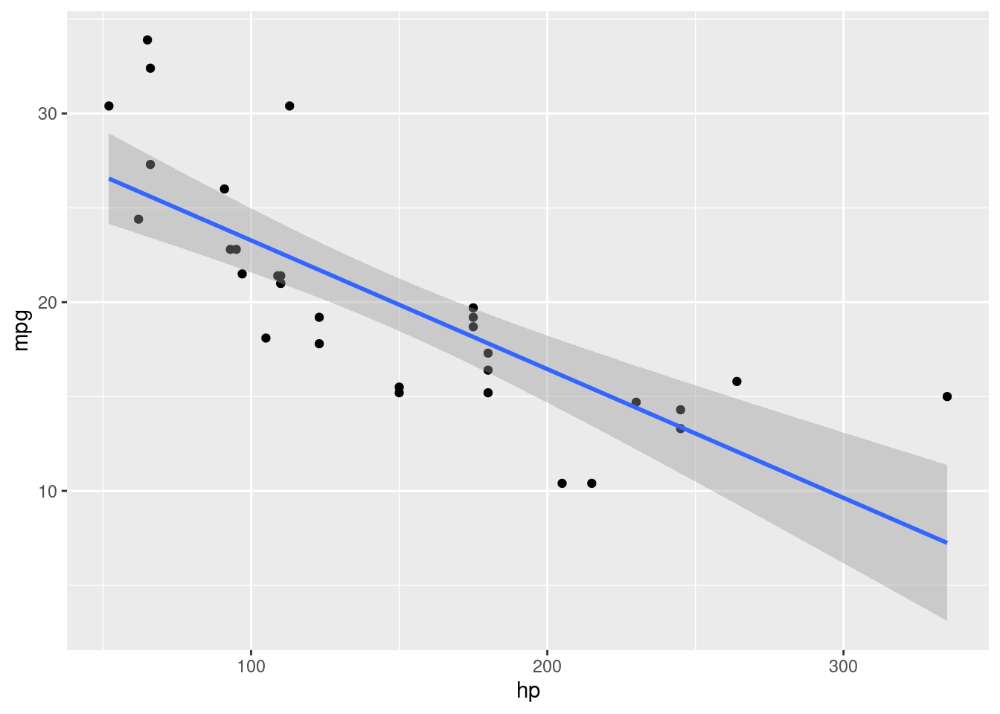

Chapter 12 Normal quantile plots
12.1 Lengths of heliconia flowers
The tropical flower Heliconia is fertilized by hummingbirds, a different species for each variety of Heliconia. Over time, the lengths of the flowers and the form of the hummingbirds’ beaks have evolved to match each other. The length of the Heliconia flower is therefore an important measurement. Does it have a normal distribution for each variety?
The data set at http://ritsokiguess.site/datafiles/heliconia.csv contains the lengths (in millimetres) of samples of flowers from each of three varieties of Heliconia: bihai, caribaea red, and caribaea yellow.
Read the data into R. There are different numbers of length measurements for each variety. How does this show up in the data frame? (Look at all the rows, not just the first ten.)
Make a normal quantile plot for the variety bihai.
Make a normal quantile plot for the variety Caribaea red (note that the variable name in the data frame has an underscore in it).
Make a normal quantile plot for the variety Caribaea yellow (this also has an underscore in it).
Which of the three varieties is closest to having a normal distribution? Explain (very) briefly.
For each of the two other varieties, apart from the one you mentioned in the last part, describe briefly how their distributions fail to be normal.
12.2 Ferritin and normality
In the lecture notes, we looked at some data on different athletes from the Australian Institute of Sport. This data set can be found at http://ritsokiguess.site/datafiles/ais.txt. Recall that the values are separated by tabs. In this question, we will assess one of the variables in the data set for normality.
Read the data set into R.
One of the variables,
Ferr, is a measurement of Ferritin for each athlete. Obtain a normal quantile plot of the Ferritin values, for all the athletes together. What do you conclude about the shape of the distribution? Explain briefly.It is possible that the shape you found in the previous part is because the athletes from all the different sports were mixed together. Use
ggplotto obtain one normal quantile plot for each sport, collected together on one plot.Looking at the plots in the previous part, would you say that the Ferritin values for each sport individually have a more normal shape than they do for all the sports together? Explain briefly.
My solutions follow:
12.3 Lengths of heliconia flowers
The tropical flower Heliconia is fertilized by hummingbirds, a different species for each variety of Heliconia. Over time, the lengths of the flowers and the form of the hummingbirds’ beaks have evolved to match each other. The length of the Heliconia flower is therefore an important measurement. Does it have a normal distribution for each variety?
The data set at http://ritsokiguess.site/datafiles/heliconia.csv contains the lengths (in millimetres) of samples of flowers from each of three varieties of Heliconia: bihai, caribaea red, and caribaea yellow.
- Read the data into R. There are different numbers of length measurements for each variety. How does this show up in the data frame? (Look at all the rows, not just the first ten.)
Solution
The usual read_csv:
##
## ── Column specification ──────────────────────────────────────────────────────────────────────────────────────────────────────────────────────────────────────────────────────────────────────
## cols(
## bihai = col_double(),
## caribaea_red = col_double(),
## caribaea_yellow = col_double()
## )I suggested to look at all the rows. Here’s why:
## # A tibble: 23 x 3
## bihai caribaea_red caribaea_yellow
## <dbl> <dbl> <dbl>
## 1 47.1 41.9 36.8
## 2 46.8 42.0 37.0
## 3 46.8 41.9 36.5
## 4 47.1 43.1 36.1
## 5 46.7 41.5 36.0
## 6 47.4 41.7 35.4
## 7 46.4 39.8 38.1
## 8 46.6 40.6 37.1
## 9 48.1 39.6 35.2
## 10 48.3 42.2 36.8
## # … with 13 more rowsThe varieties with fewer values have missings (NAs) attached to the end. This is because all the columns in a data frame have to have the same number of values. (The missings won’t impact what we do below — we get a warning but not an error, and the plots are the same as they would be without the missings — but you might be aesthetically offended by them, in which case you can read what I do later on.)
\(\blacksquare\)
- Make a normal quantile plot for the variety bihai.
Solution
There’s a certain amount of repetitiveness here (that we work around later):
## Warning: Removed 7 rows containing non-finite values (stat_qq).## Warning: Removed 7 rows containing non-finite values (stat_qq_line).
I’m saving the comments until we’ve seen all three.
\(\blacksquare\)
- Make a normal quantile plot for the variety Caribaea red (note that the variable name in the data frame has an underscore in it).
Solution
Same idea again:

\(\blacksquare\)
- Make a normal quantile plot for the variety Caribaea yellow (this also has an underscore in it).
Solution
And, one more time:
## Warning: Removed 8 rows containing non-finite values (stat_qq).## Warning: Removed 8 rows containing non-finite values (stat_qq_line).
I did a lot of copying and pasting there.
\(\blacksquare\)
- Which of the three varieties is closest to having a normal distribution? Explain (very) briefly.
Solution
Look at the three plots, and see which one stays closest to the line. To my mind, this is clearly the last one, Caribaea yellow. So your answer ought to be “Caribaea yellow, because the points are closest to the line”. This, I would say, is acceptably close to normal, so using a \(t\)-test here would be fine. The answer “the last one” is not quite complete, because I asked you which variety, so your answer needs to name a variety.
\(\blacksquare\)
- For each of the two other varieties, apart from the one you mentioned in the last part, describe briefly how their distributions fail to be normal.
Solution
Let’s look at bihai first. I see this one as an almost classic curve: the points are above the line, then below, then above again. If you look at the data scale (\(y\)-axis), the points are too bunched up to be normal at the bottom, and too spread out at the top: that is, skewed to the right. You might also (reasonably) take the view that the points at the bottom are close to the line (not sure about the very smallest one, though), but the points at the top are farther away, so that what we have here is two outliers at the top. I’m OK with that. It’s often difficult to distinguish between skewness and outliers (at the end of the long tail). What you conclude can often depend on how you look. We also had to look at the second plot, caribaea red. This is a rather strange one: the points veer away from the line at the ends, but look carefully: it is not outliers at both ends, but rather the points are too bunched up to be normal at both ends: that is, the distribution has short tails compared to the normal. It is something more like a uniform distribution, which has no tails at all, than a normal distribution, which won’t have outliers but it does have some kind of tails. So, “short tails”.
Extra: that’s all you needed, but I mentioned above that you might have
been offended aesthetically by those missing values that were not
really missing. Let’s see if we can do this aesthetically. As you
might expect, it uses several of the tools from the “tidyverse”.
First, tidy the data. The three columns of the data frame are all
lengths, just lengths of different things, which need to be
labelled. This is pivot_longer from tidyr:
heliconia %>%
pivot_longer(everything(), names_to="variety", values_to="length", values_drop_na = T) -> heliconia.long
heliconia.long ## # A tibble: 54 x 2
## variety length
## <chr> <dbl>
## 1 bihai 47.1
## 2 caribaea_red 41.9
## 3 caribaea_yellow 36.8
## 4 bihai 46.8
## 5 caribaea_red 42.0
## 6 caribaea_yellow 37.0
## 7 bihai 46.8
## 8 caribaea_red 41.9
## 9 caribaea_yellow 36.5
## 10 bihai 47.1
## # … with 44 more rowsThis is now aesthetic as well as tidy: all those NA lines
have gone (you can check that
there are now \(16+23+15=54\) rows of actual data, as there should be). This was accomplished by the last thing in the pivot_longer: “in the values (that is, the lengths), drop any missing values.”
Now, how to get a normal quantile plot for each variety? This is
facet_wrap on the end of the ggplot again.
ggplot(heliconia.long,aes(sample=length))+
stat_qq()+stat_qq_line()+
facet_wrap(~variety,scale="free")
These are a bit elongated vertically. The scale="free" allows
a different vertical scale for each plot (otherwise there would be one
vertical scale for all three plots); I decided that was best here
since the typical lengths for the three varieties are
different. Caribaea yellow is more or less straight,
bihai has outliers (and may also be curved), caribaea
red has that peculiar S-bend shape.
I didn’t really like the vertical elongation. I’d rather have the
plots be almost square, which they would be if we put them in three
cells of a \(2 \times 2\) grid. facet_wrap has nrow
and ncol which you can use one or both of to make this
happen. This creates an array of plots with two columns and as many
rows as needed:
ggplot(heliconia.long,aes(sample=length))+
stat_qq()+stat_qq_line()+
facet_wrap(~variety,scale="free",ncol=2)
I think the squarer plots make it easier to see the shape of these: curved, S-bend, straightish. Almost the same code will get a histogram for each variety, which I’ll also make squarish:
ggplot(heliconia.long,aes(x=length))+
geom_histogram(bins=5)+facet_wrap(~variety,scale="free",ncol=2)
bihai has those two outliers, caribaea red has no tails to speak of (or you might say “it’s bimodal”, which would be another explanation of the pattern on the normal quantile plot1) and caribaea yellow is shoulder-shruggingly normal (I looked at that and said, “well, I guess it’s normal”.) After you’ve looked at the normal quantile plots, you see what a crude tool a histogram is for assessing normality.
\(\blacksquare\)
12.4 Ferritin and normality
In the lecture notes, we looked at some data on different athletes from the Australian Institute of Sport. This data set can be found at http://ritsokiguess.site/datafiles/ais.txt. Recall that the values are separated by tabs. In this question, we will assess one of the variables in the data set for normality.
- Read the data set into R.
Solution
read_tsv is the right thing:
##
## ── Column specification ──────────────────────────────────────────────────────────────────────────────────────────────────────────────────────────────────────────────────────────────────────
## cols(
## Sex = col_character(),
## Sport = col_character(),
## RCC = col_double(),
## WCC = col_double(),
## Hc = col_double(),
## Hg = col_double(),
## Ferr = col_double(),
## BMI = col_double(),
## SSF = col_double(),
## `%Bfat` = col_double(),
## LBM = col_double(),
## Ht = col_double(),
## Wt = col_double()
## )## # A tibble: 202 x 13
## Sex Sport RCC WCC Hc Hg Ferr BMI SSF `%Bfat` LBM Ht Wt
## <chr> <chr> <dbl> <dbl> <dbl> <dbl> <dbl> <dbl> <dbl> <dbl> <dbl> <dbl> <dbl>
## 1 female Netball 4.56 13.3 42.2 13.6 20 19.2 49 11.3 53.1 177. 59.9
## 2 female Netball 4.15 6 38 12.7 59 21.2 110. 25.3 47.1 173. 63
## 3 female Netball 4.16 7.6 37.5 12.3 22 21.4 89 19.4 53.4 176 66.3
## 4 female Netball 4.32 6.4 37.7 12.3 30 21.0 98.3 19.6 48.8 170. 60.7
## 5 female Netball 4.06 5.8 38.7 12.8 78 21.8 122. 23.1 56.0 183 72.9
## 6 female Netball 4.12 6.1 36.6 11.8 21 21.4 90.4 16.9 56.4 178. 67.9
## 7 female Netball 4.17 5 37.4 12.7 109 21.5 107. 21.3 53.1 177. 67.5
## 8 female Netball 3.8 6.6 36.5 12.4 102 24.4 157. 26.6 54.4 174. 74.1
## 9 female Netball 3.96 5.5 36.3 12.4 71 22.6 101. 17.9 56.0 174. 68.2
## 10 female Netball 4.44 9.7 41.4 14.1 64 22.8 126. 25.0 51.6 174. 68.8
## # … with 192 more rowsI listed the data to check that I had it right, but I didn’t ask you to. (If you didn’t have it right, that will show up soon enough.)
\(\blacksquare\)
- One of the variables,
Ferr, is a measurement of Ferritin for each athlete. Obtain a normal quantile plot of the Ferritin values, for all the athletes together. What do you conclude about the shape of the distribution? Explain briefly.
Solution
As you would expect:

This is almost a classic right skew: the values are too bunched up at the bottom and too spread out at the top. The curved shape should be making you think “skewed” and then you can work out which way it’s skewed.
\(\blacksquare\)
- It is possible that the shape you found in the previous
part is because the athletes from all the different sports were
mixed together. Use
ggplotto obtain one normal quantile plot for each sport, collected together on one plot.
Solution
Your previous plot had all the sports mixed together. To that you add something that will put each sport in its own facet:

\(\blacksquare\)
- Looking at the plots in the previous part, would you say that the Ferritin values for each sport individually have a more normal shape than they do for all the sports together? Explain briefly.
Solution
There are a couple of ways you can go, and as ever I’m looking
mostly for consistency of argument. The two major directions you
can go are (i) most of these plots are still curved the same way
as the previous one, and (ii) they are mostly straighter than
they were before.
Possible lines of argument include that pretty much all of these
plots are right-skewed still, with the same upward-opening
curve. Pretty much the only one that doesn’t is Gymnastics, for
which there are only four observations, so you can’t really
tell. So, by this argument, Ferritin just does have a
right-skewed distribution, and breaking things out by sport
doesn’t make much difference to that.
Or, you could go another way and say that the plot of all the
data together was very curved, and these plots are much
less curved, that is to say, much less skewed. Some of them,
such as basketball and netball, are almost straight, and they
are almost normally distributed. Some of the distributions, such
as track sprinting (TSprnt), are definitely still
right-skewed, but not as seriously so as before.
Decide what you think and then discuss how you see it.
\(\blacksquare\)
If you have studied a thing called kurtosis, the fourth moment about the mean, you’ll know that this measures both tail length and peakedness, so a short-tailed distribution also has a strong peak. Or, maybe, in this case, two strong peaks.↩